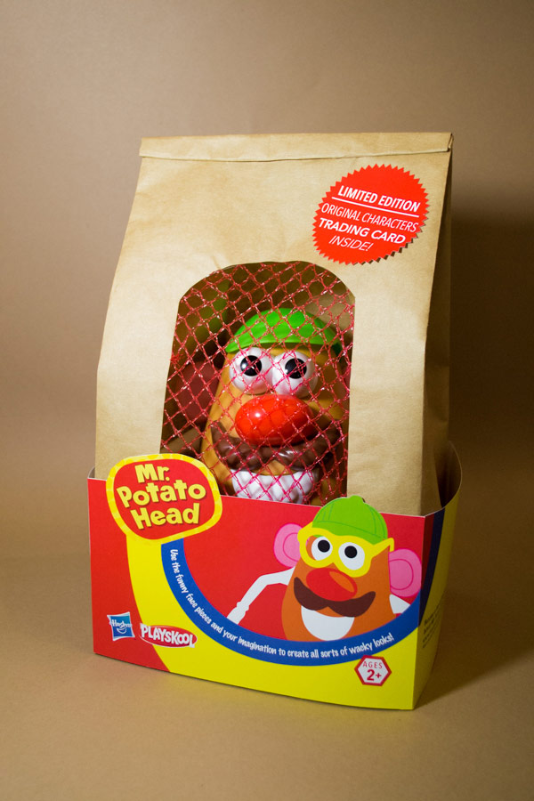
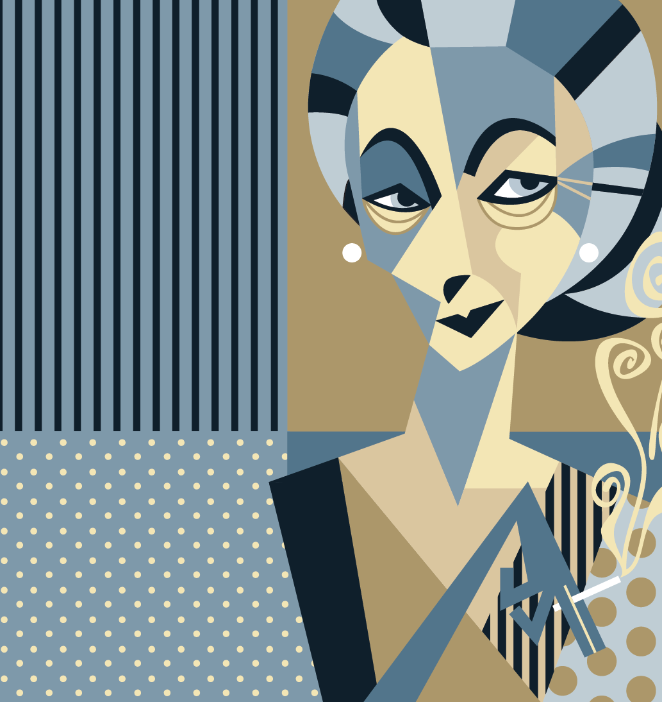
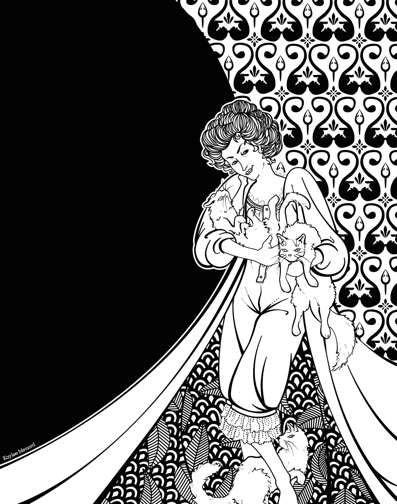
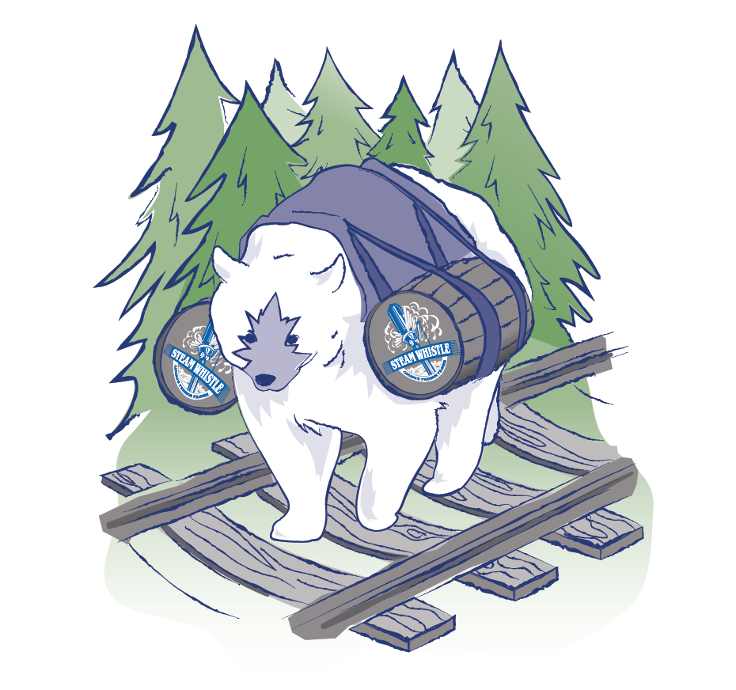

<main class="gutter-1-2 pad-t-1-2 pad-b content" id="main" role="main">
	<div class="grid">
		<h1 class="unit">Portfolio Pieces</h1>
		<a class="unit xs-1 s-1 m-1-3 l-1-4 island-1-2"href="{{site.baseurl}}/pages/project-1.html">
			
		</a>
		<a class="unit xs-1 s-1 m-1-3 l-1-4 island-1-2 project-link" href="{{site.baseurl}}/pages/project-2.html">
			
		</a>		
		<a class="unit xs-1 s-1 m-1-3 l-1-4 island-1-2 project-link" href="{{site.baseurl}}/pages/project-3.html">
			
		</a>	
		<a class="unit xs-1 s-1 m-1-3 l-1-4 island-1-2 project-link" href="{{site.baseurl}}/pages/project-4.html">
			
		</a>
		<a class="unit xs-1 s-1 m-1-3 l-1-5 island-1-2 project-link" href="{{site.baseurl}}/pages/project-5.html">
			
		</a>
		<a class="unit xs-1 s-1 m-1-3 l-1-5 island-1-2 project-link" href="{{site.baseurl}}/pages/project-6.html">
			
		</a>
		<a class="unit xs-1 s-1 m-1-3 l-1-5 island-1-2 project-link" href="{{site.baseurl}}/pages/project-7.html">
			
		</a>
		<a class="unit xs-1 s-1 m-1-3 l-1-5 island-1-2 project-link" href="{{site.baseurl}}/pages/project-8.html">
			
		</a>
		<a class="unit xs-1 s-1 m-1-3 l-1-5 island-1-2 project-link" href="{{site.baseurl}}/pages/project-9.html">
			
		</a>
	</div>
</main>